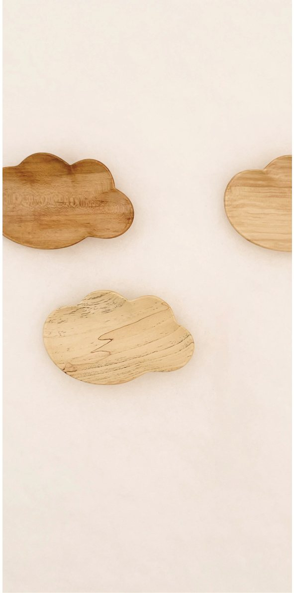
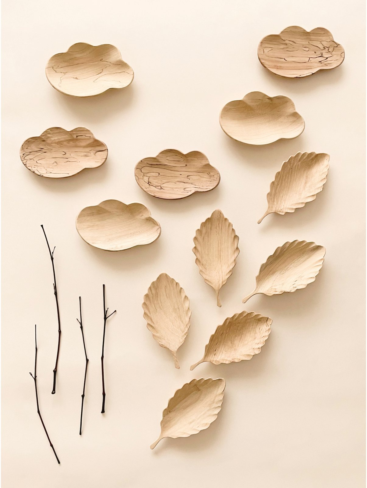

I spent a whole summer drawing the clouds over the village where my studio is, one drawing a day. I wanted to keep some of that richness before it went.
The sun and the moon make our days, but what fills the hours in between is never the same shape twice. A chaha (茶荷) for dry tea leaves. An everyday bowl. Somewhere for the newly married to set down their rings. It’s carved from Korean hardwood, and like the clouds, no two are alike.

About 12.5 × 8 × 3 cm. Zelkova, cherry, toon, Maackia and others. Oil or urushi lacquer.
As each piece is carved by hand, dimensions may vary. Slight differences in colour and form are the character of each individual wood.